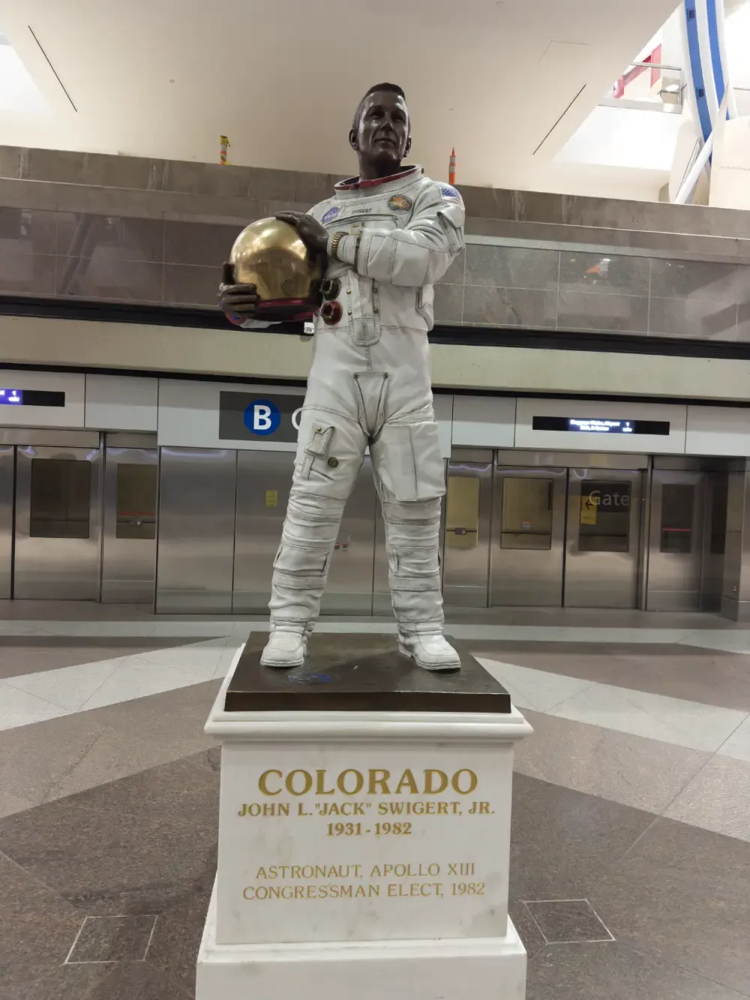

Flying Home
DEN to IND
On my way back home, currently on a flight from DED to IND. No problems with this one, unlike my flight out.
Unfortunately, unlike this leg, not all is well with me. I fell pretty ill last night, and was wondering if I was going to be fit to fly the next morning.
I’m not going to go into details, but it wasn’t good. Thankfully, today I am just barely fit to fly. I do wish that I brought a hoodie with me, but Unfortunately, I did not. I was hoping to pick one up at the airport, but they didn’t have any in my size. I’ll check at check IND.
DEN did have a really cool statue. I am a massive fan of the Apollo program (The moon landings). DEN had a statue of JOHN L.“JACK” SWIGERT, JR., the pilot of Apollo XIII. The mission that suffered an explosion of one of the oxygen tanks1 on their way to the moon. The statue is of him in his flight suite.
Photo

And yes, I’m still watching plane crash documentaries. You can see a list of the ones I grabbed here.
IND to BWI
IND was pretty simple. got in, checked where my gate was, then wen’t hunting for a hoodie. Unfortunately IND only had hoodies in small and 2XL. Great. Picked up some meds for way too much, and waited for my plane.
I didn’t watch anything on my flight to BWI, I just wanted to get home.
Upon getting home, I crashed in bed for three days. All and All, I’m def going back.
DEN to IND was written on the plane from DEN to IND, everything else was written long after getting home.